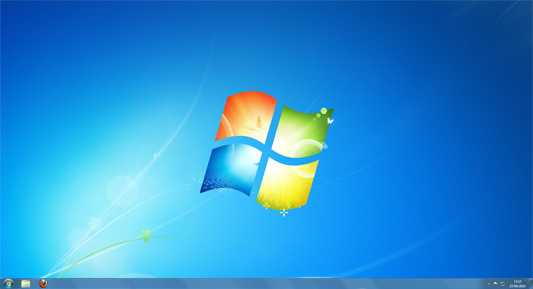

Free
computer Tutorials
|
Free
computer Tutorials
|
|
 back back |
Stay at Home and Learn | ||||
The Windows 7 Desktop
When your computer starts for the first time, what you see is called the Desktop. It will look something like this:  The Desktop is split into two areas. The strip at the bottom, with the clock to the right and the round Start button to the left, is called the Taskbar. We explore this area in a different section (the Taskbar). But here's a closer look at it: The Taskbar above is from Windows 7. Windows Vista users will see the round Start button on the left, but will have smaller icon just to the right of it. You'll still have the clock on the right hand side, though. The rest of the Desktop is the space where all your programmes will appear when you start them up. This space contains a default background wallpaper, but it can also contain shortcuts to programmes, documents and folder. You can change the default background wallpaper, and we'll do that next.
How to Change you Desktop Wallpaper >> |
|||||
|